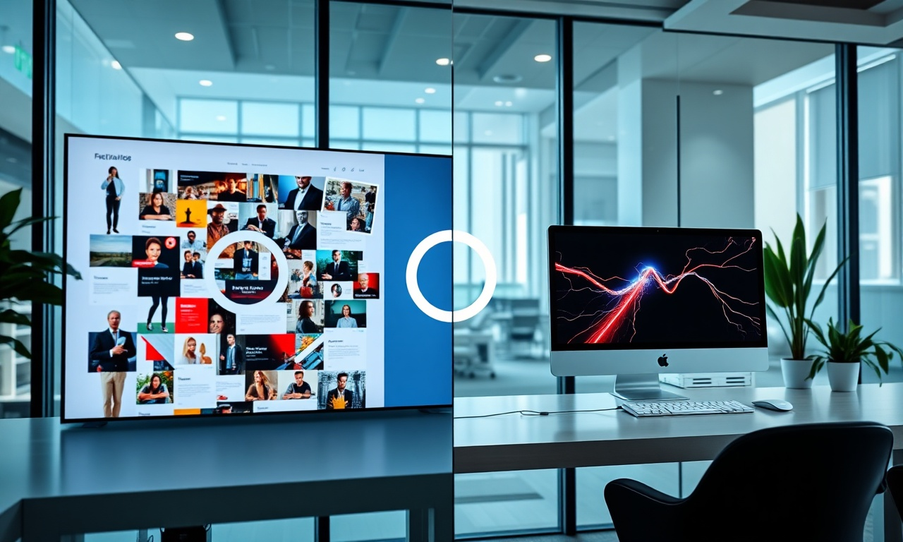
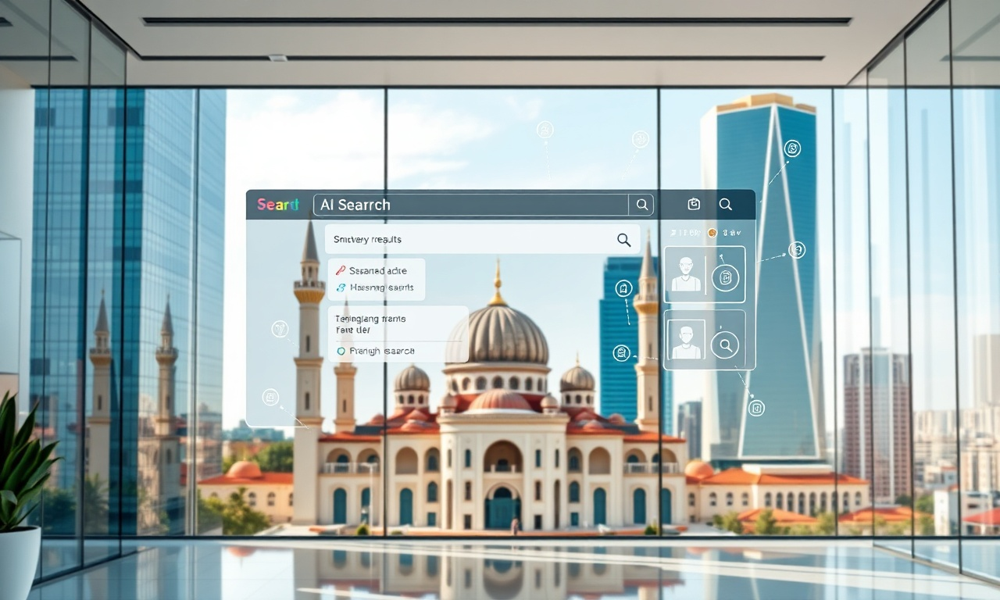

Définition : Qu'est-ce que le SEO au Maroc en 2026?
En résumé : SEO au Maroc : Les 7 Erreurs d'Investissement Qui Vous Font Perdre 50 000 MAD par Mois (Et Comment les Éviter) est une démarche stratégique clé dans le domaine du Référencement Naturel (SEO). Elle permet aux entreprises au Maroc d’optimiser durablement leurs performances digitales, d’augmenter leur visibilité et de maximiser le retour sur investissement (ROI) de leurs campagnes.
Le SEO (Search Engine Optimization) est l'ensemble des techniques visant à améliorer la visibilité et le positionnement d'un site web dans les résultats organiques de Google et des moteurs d'IA générative, afin d'attirer un trafic qualifié et de générer des conversions. Au Maroc, en 2026, une stratégie SEO efficace ne se limite plus aux mots-clés, mais intègre l'expérience utilisateur, la vitesse de chargement, le maillage interne, et l'optimisation pour les réponses AI Overviews, le tout aligné sur les objectifs commerciaux de l'entreprise.
Introduction : Le Mirage du SEO au Maroc
Casablanca, Tanger, Marrakech. Partout au Maroc, des entreprises investissent des fortunes dans le référencement naturel. Elles signent des contrats avec des agences, attendent des résultats... et ne voient souvent rien venir. Ou pire, elles se retrouvent avec des sites pénalisés, des budgets épuisés, et un classement qui dégringole. Pourquoi? Parce que le marché marocain du SEO est miné par des erreurs coûteuses et des pièges savamment dissimulés. En tant que Directeur Stratégique de DatRey, j'ai vu des centaines d'entreprises perdre entre 20 000 et 100 000 MAD par mois à cause de ces erreurs. Cet article est votre plan de bataille pour les éviter et transformer votre investissement SEO en machine à cash.
Erreur n°1 : Choisir un Prestataire sur le Prix, Pas sur la Compétence
Le premier piège, et le plus fatal, c'est de choisir une agence SEO au Maroc en comparant uniquement les devis. Vous trouvez une offre à 3 000 MAD par mois quand une autre agence vous en demande 15 000. Tentant, non? Mais en SEO, vous récoltez ce que vous semez. Les agences low-cost utilisent souvent des techniques de référencement black hat : achat de liens de mauvaise qualité, contenu dupliqué, bourrage de mots-clés. Résultat? Vous gagnez quelques positions pendant 2 mois, puis Google vous pénalise. Votre site disparaît des résultats, et il vous faudra des mois, voire des années, pour rétablir votre réputation. Chez DatRey, nous avons récupéré des sites qui avaient été massacrés par des prestataires incompétents. Chaque mois, nous recevons des appels de PDG paniqués, prêts à tout pour sauver leur visibilité. Ne soyez pas l'un d'eux. Investissez dans une agence qui comprend votre business, qui fait des audits techniques rigoureux, et qui vous montre des études de cas concrètes avec des ROI mesurables. Un bon SEO au Maroc coûte entre 10 000 et 30 000 MAD par mois, mais il vous rapporte 5 à 10 fois ce montant en revenus.
Erreur n°2 : Ignorer le GEO (Generative Engine Optimization)
Nous sommes en 2026. Le paysage du référencement a radicalement changé. Google a intégré les AI Overviews, ChatGPT et Perplexity sont devenus des points d'entrée majeurs pour la recherche d'informations. Pourtant, la majorité des agences SEO au Maroc continuent de se concentrer uniquement sur les mots-clés traditionnels et les backlinks. Elles ignorent totalement le GEO, ou Generative Engine Optimization. Le GEO consiste à optimiser votre contenu pour qu'il soit cité comme source fiable par les moteurs d'IA. Concrètement, cela signifie créer des réponses claires, structurées, avec des citations, des statistiques, et des données vérifiables. Si votre site n'est pas optimisé pour le GEO, vous perdez des parts de marché au profit de vos concurrents qui, eux, apparaissent dans les réponses générées par l'IA. Chez DatRey, nous avons développé une méthodologie exclusive qui combine SEO classique et GEO, garantissant à nos clients une visibilité maximale sur tous les canaux de recherche. Ne laissez pas cette tendance vous passer sous le nez.
Erreur n°3 : Se Focaliser sur le Trafic Plutôt que sur les Conversions
« Nous avons augmenté votre trafic de 300% » – c'est l'argument de vente favori des agences SEO médiocres. Mais qu'est-ce que cela signifie pour votre chiffre d'affaires? Si vous attirez des visiteurs qui ne correspondent pas à votre persona, ou qui arrivent sur une page mal optimisée, votre taux de conversion reste proche de zéro. Le vrai but du SEO n'est pas d'attirer du trafic, mais d'attirer du trafic qualifié qui se transforme en leads, en ventes, en revenus. Au Maroc, où le marché est concurrentiel, chaque visiteur coûte de l'argent. Vous devez donc vous assurer que chaque clic compte. Chez DatRey, nous ne nous contentons pas de vous classer sur des mots-clés. Nous analysons l'intention de recherche, nous optimisons vos landing pages, nous améliorons votre taux de conversion, et nous suivons des KPIs précis : coût par acquisition, revenu par visiteur, retour sur investissement. Si votre agence ne vous parle pas de ces métriques, fuyez. Vous ne voulez pas de vanity metrics, vous voulez du cash.
Erreur n°4 : Négliger la Recherche de Mots-Clés Locaux et l'Intention
Beaucoup d'entreprises marocaines font l'erreur de cibler des mots-clés trop génériques ou trop concurrentiels, sans penser à la localisation. Par exemple, si vous êtes un avocat à Casablanca, cibler « avocat » est inutile. Vous serez noyé parmi des milliers de résultats internationaux. Vous devez cibler « avocat divorce Casablanca » ou « avocat affaires Rabat ». De plus, il faut comprendre l'intention de recherche derrière chaque requête. Un utilisateur qui tape « meilleure agence SEO Maroc » est en phase de recherche, pas forcément prêt à acheter. Un utilisateur qui tape « audit SEO gratuit Casablanca » a une intention commerciale beaucoup plus forte. Votre stratégie de contenu doit refléter cette nuance. Chez DatRey, nous utilisons des outils de recherche de mots-clés avancés, nous analysons les requêtes de vos concurrents, et nous construisons des clusters sémantiques qui couvrent toutes les étapes du parcours d'achat. Résultat : vous attirez des prospects prêts à passer à l'action, et votre ROI s'envole.
Erreur n°5 : Sous-Estimer la Vitesse de Chargement et l'Expérience Mobile
Au Maroc, plus de 80% des recherches se font sur mobile. Si votre site met plus de 3 secondes à charger, vous perdez la majorité de vos visiteurs. Google le sait et pénalise les sites lents dans ses résultats. Pourtant, beaucoup d'entreprises négligent cet aspect technique. Elles ont un site lourd, mal optimisé, avec des images non compressées, du code JavaScript superflu, et un hébergement médiocre. Résultat : un taux de rebond élevé, un mauvais classement, et des opportunités perdues. Chez DatRey, nous faisons de la performance web une priorité absolue. Nous optimisons chaque aspect de votre site pour garantir une vitesse de chargement inférieure à 2 secondes, une expérience mobile irréprochable, et une compatibilité avec les Core Web Vitals de Google. Nous avons aidé une entreprise de e-commerce à Tanger à réduire son temps de chargement de 6 secondes à 1,8 seconde, ce qui a entraîné une augmentation de 45% des conversions. Ne laissez pas cette erreur vous coûter des clients.
Erreur n°6 : Ignorer le Maillage Interne et la Structure du Site
Le maillage interne est l'un des leviers SEO les plus sous-estimés. Il s'agit de la manière dont vos pages sont liées entre elles. Un bon maillage interne permet de distribuer la popularité (le « jus » SEO) à travers votre site, d'aider Google à comprendre la hiérarchie de vos contenus, et d'améliorer l'expérience utilisateur. Au Maroc, beaucoup de sites web sont construits sans réflexion stratégique : des pages orphelines, des liens morts, une navigation confuse. Résultat : Google ne comprend pas votre site, et vos pages importantes ne se classent pas. Chez DatRey, nous réalisons un audit complet de votre architecture de site, nous créons des sillos de contenu, et nous optimisons les ancres de liens. Cette approche a permis à une PME de Marrakech d'augmenter le trafic organique de 120% en 4 mois, sans aucun backlink supplémentaire. Le maillage interne est un levier puissant, et il est entièrement sous votre contrôle.

Erreur n°7 : Négliger le Contenu Evergreen et la Mise à Jour Régulière
Le contenu est roi, mais le contenu obsolète est un poison. Beaucoup d'entreprises créent des articles de blog, les publient, puis les oublient. Or, Google privilégie les contenus frais, mis à jour régulièrement, et qui répondent aux questions actuelles des utilisateurs. Si vous avez un article sur « les tendances du marketing digital au Maroc » qui date de 2024, il est obsolète en 2026. Vous devez le mettre à jour avec des données de 2026, de nouvelles statistiques, et des exemples récents. De même, vous devez créer du contenu evergreen, c'est-à-dire des articles qui restent pertinents pendant des années, comme « comment choisir son avocat à Casablanca » ou « les avantages du e-commerce au Maroc ». Chez DatRey, nous avons un processus de content management qui inclut des audits de contenu trimestriels et des mises à jour systématiques. Nous avons aidé une entreprise B2B à Rabat à rafraîchir son blog, ce qui a entraîné une augmentation de 80% du trafic organique en 3 mois. Ne laissez pas votre contenu devenir une relique.
Comment DatRey Transforme Votre SEO en ROI Concret
Chez DatRey, nous ne sommes pas une agence SEO classique. Nous sommes une agence de croissance rentable. Notre approche est simple : nous alignons le SEO sur vos objectifs business. Nous commençons par un audit complet de votre présence en ligne : technique, contenu, backlinks, expérience utilisateur. Ensuite, nous construisons une stratégie personnalisée qui cible les mots-clés à forte intention, optimise votre site pour la conversion, et intègre les dernières tendances du GEO. Nous suivons chaque étape avec des rapports transparents, des tableaux de bord en temps réel, et des recommandations actionnables. Nous ne nous arrêtons pas au classement ; nous nous concentrons sur le chiffre d'affaires généré. Nous avons aidé des PME et des multinationales au Maroc à obtenir un ROI SEO de 500% à 1000% en moyenne. Par exemple, une entreprise de services à Casablanca a investi 25 000 MAD par mois avec nous, et a généré 250 000 MAD de revenus attribués au SEO en seulement 3 mois. C'est ça, le pouvoir d'une stratégie SEO bien exécutée.
Conclusion : Votre Prochaine Étape pour un SEO Rentable
Le SEO au Maroc est un champ de bataille, mais avec les bonnes stratégies, vous pouvez dominer votre marché. N'ignorez pas ces 7 erreurs critiques. Investissez dans une agence compétente, intégrez le GEO, suivez les bons KPIs, ciblez les mots-clés locaux, optimisez la vitesse, structurez votre maillage interne, et maintenez votre contenu à jour. Chez DatRey, nous sommes prêts à vous accompagner. Nous vous offrons un audit digital gratuit qui vous révélera les forces et les faiblesses de votre présence en ligne. Ne laissez pas vos concurrents prendre l'avantage. Demandez votre audit dès aujourd'hui et commencez à transformer votre SEO en une machine à cash.
📞 Contactez DatRey – Votre partenaire de croissance au Maroc et à l'international. Demandez votre audit gratuit maintenant.